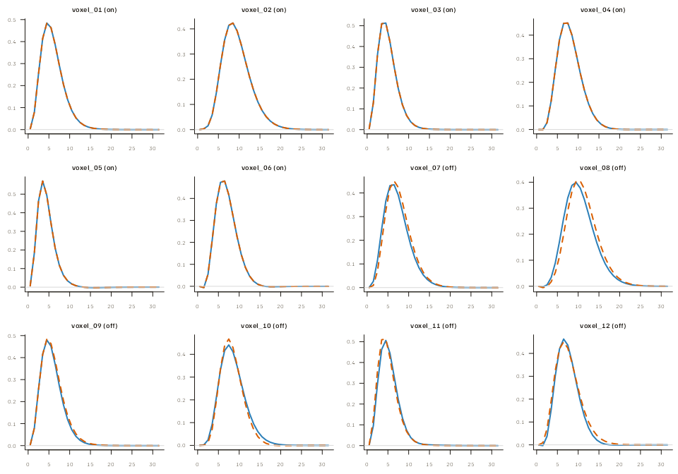
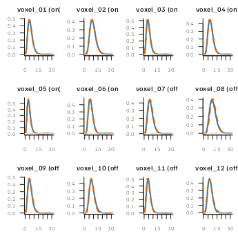
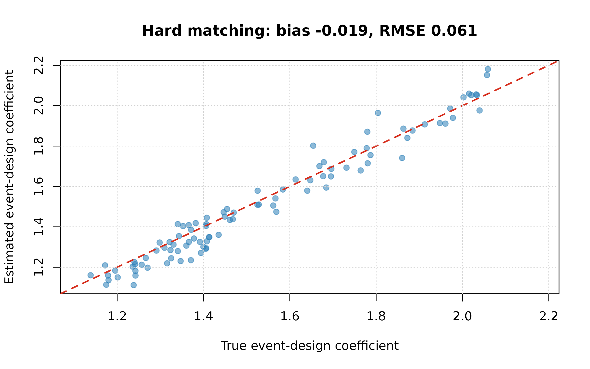
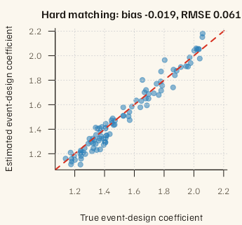

Shared-basis HRF matching: shapes, score margins, and trial coefficients
Source:vignettes/sbhm.Rmd
sbhm.RmdWhat this workflow estimates
Shared-basis HRF matching (SBHM) selects a voxel’s HRF from a finite
library or forms an explicitly requested blend of library members. It
provides an alternative to the continuous basis fit in
vignette("voxel-wise-hrf"). Read that article,
vignette("fmrilss"), and
vignette("oasis_method") first for HRF normalization and
trial estimation.
SBHM estimates two quantities separately:
- a voxel-specific HRF shape coordinate in a shared basis; and
- a trial-wise coefficient on the event design built from that shape.
The coefficient is not automatically a peak BOLD response. With
normalize = TRUE, sbhm_build() normalizes each
candidate to discrete unit
energy before rank truncation. The returned coefficient is therefore on
the scale of the selected rank-truncated waveform and the supplied event
duration and amplitude. Changing any of those changes the coefficient
scale.
SBHM produces adaptive point estimates. Shape matching, optional
blending, ridge penalties, and reuse of the same data for shape
selection and coefficient estimation are not accounted for by calibrated
standard errors or test statistics. Every SBHM amplitude route rejects
return_se = TRUE.
contract <- data.frame(
Object = c("Library", "Shared basis", "Shape match", "Trial output", "Uncertainty"),
Contract = c(
"Finite, uniquely named candidate waveforms; optional discrete-L2 normalization",
"Rank-r SVD representation with total-energy and numerical-rank metadata",
"Hard candidate or explicit soft blend; margin is an uncalibrated score difference",
"Coefficient on the supplied event design using the selected rank-truncated shape",
"Point estimates only; SBHM standard errors and tests are not calibrated"
)
)
knitr::kable(contract, caption = "The estimands and boundaries used throughout this article.")| Object | Contract |
|---|---|
| Library | Finite, uniquely named candidate waveforms; optional discrete-L2 normalization |
| Shared basis | Rank-r SVD representation with total-energy and numerical-rank metadata |
| Shape match | Hard candidate or explicit soft blend; margin is an uncalibrated score difference |
| Trial output | Coefficient on the supplied event design using the selected rank-truncated shape |
| Uncertainty | Point estimates only; SBHM standard errors and tests are not calibrated |
Build a candidate library
For a compact computational example, we use a grid of positive gamma curves. These curves illustrate the computation; they are not intended to cover the range of physiological HRFs. For a scientific analysis, choose candidates and preprocessing appropriate to the responses you expect.
TR <- 1
n_time <- 180L
sframe <- sampling_frame(blocklens = n_time, TR = TR)
time <- samples(sframe, global = TRUE)
span <- 32
library_grid <- expand.grid(
shape = c(5, 6.5, 8, 9.5),
rate = c(0.85, 1.00, 1.15)
)
library_H <- vapply(seq_len(nrow(library_grid)), function(i) {
h <- dgamma(time, shape = library_grid$shape[i], rate = library_grid$rate[i])
h[time > span] <- 0
h
}, numeric(length(time)))
colnames(library_H) <- sprintf(
"gamma_s%02d_r%03d",
round(10 * library_grid$shape), round(100 * library_grid$rate)
)
rank_used <- 4L
sbhm <- sbhm_build(
library_H = library_H,
r = rank_used,
tgrid = time,
span = span,
normalize = TRUE,
baseline = NULL,
ref = "mean"
)Choose and inspect the basis rank
sbhm_build() performs one decomposition and retains the
full singular-value spectrum as metadata. The cumulative fraction below
uses the sum of squared singular values across the full spectrum as its
denominator. We retain rank four for this example; the table shows how
much library energy that choice preserves.
singular_values <- sbhm$meta$singular_values_full
rank_table <- data.frame(
Rank = seq_along(singular_values),
CumulativeEnergy = cumsum(singular_values^2) / sum(singular_values^2),
RelativeResidual = sqrt(
pmax(0, 1 - cumsum(singular_values^2) / sum(singular_values^2))
)
)
rank_table <- head(rank_table, 6)
rank_table$CumulativeEnergy <- round(rank_table$CumulativeEnergy, 6)
rank_table$RelativeResidual <- round(rank_table$RelativeResidual, 6)
knitr::kable(
rank_table,
caption = "Total library energy retained and relative Frobenius residual by rank."
)| Rank | CumulativeEnergy | RelativeResidual |
|---|---|---|
| 1 | 0.805168 | 0.441398 |
| 2 | 0.972669 | 0.165321 |
| 3 | 0.997154 | 0.053345 |
| 4 | 0.999824 | 0.013274 |
| 5 | 0.999991 | 0.003067 |
| 6 | 1.000000 | 0.000311 |
The shared basis B is orthonormal on this sampled grid.
The coordinates A reconstruct the rank-four candidate
waveforms as B %*% A. The basis vectors are algebraic
modes; they are not direct estimates of latency, width, or
physiology.
Simulate known shapes and trial coefficients
The simulation contains twelve voxels. Six use an exact library member and six use an off-library convex mixture. This tests both interpolation and the limitation of hard matching. Trial coefficients vary across trials and voxels. Motion-like nuisance signals and independent Gaussian noise are added explicitly.
n_voxels <- 12L
voxel_names <- paste0("voxel_", sprintf("%02d", seq_len(n_voxels)))
onsets <- seq(12, 138, length.out = 8)
n_trials <- length(onsets)
trial_names <- paste0("event_", sprintf("%02d", seq_len(n_trials)))
design_spec <- list(
sframe = sframe,
cond = list(
onsets = onsets,
duration = 0,
amplitude = 1,
span = span,
trial_names = trial_names
),
precision = 0.1,
method = "conv"
)
on_library_idx <- c(1L, 3L, 5L, 7L, 9L, 11L)
alpha_true <- matrix(NA_real_, rank_used, n_voxels)
alpha_true[, 1:6] <- sbhm$A[, on_library_idx, drop = FALSE]
mix_pairs <- rbind(c(1, 2), c(3, 4), c(5, 6), c(7, 8), c(9, 10), c(11, 12))
mix_weight <- c(0.25, 0.40, 0.55, 0.70, 0.35, 0.60)
for (v in 1:6) {
alpha_true[, 6 + v] <-
mix_weight[v] * sbhm$A[, mix_pairs[v, 1]] +
(1 - mix_weight[v]) * sbhm$A[, mix_pairs[v, 2]]
}
colnames(alpha_true) <- voxel_names
hrf_B <- sbhm_hrf(sbhm$B, sbhm$tgrid, sbhm$span)
trial_regs <- lapply(seq_along(onsets), function(j) {
rr <- regressor(
onsets = onsets[j], hrf = hrf_B,
duration = 0, amplitude = 1, span = span, summate = FALSE
)
as.matrix(evaluate(rr, grid = time, precision = 0.1, method = "conv"))
})
trial_index <- seq_len(n_trials)
voxel_index <- seq_len(n_voxels)
beta_true <- outer(trial_index, voxel_index, function(i, v) {
1.6 + 0.35 * sin(i / 1.7 + v / 4) + 0.12 * cos(i * v / 5)
})
dimnames(beta_true) <- list(trial_names, voxel_names)
Nuisance <- cbind(
linear = seq(-1, 1, length.out = n_time),
slow_sine = sin(2 * pi * time / max(time))
)
nuisance_coef <- rbind(
seq(-0.25, 0.25, length.out = n_voxels),
seq(0.20, -0.20, length.out = n_voxels)
)
Y_mean <- matrix(2, n_time, n_voxels) + Nuisance %*% nuisance_coef
for (v in seq_len(n_voxels)) {
for (j in seq_len(n_trials)) {
Y_mean[, v] <- Y_mean[, v] +
beta_true[j, v] * as.numeric(trial_regs[[j]] %*% alpha_true[, v])
}
}
set.seed(812)
Y <- Y_mean + matrix(rnorm(n_time * n_voxels, sd = 0.04), n_time, n_voxels)
colnames(Y) <- voxel_namesWe first fit with hard matching and zero penalties. Zero penalties allow a direct comparison with an unpenalized GLM using the selected shape. Later we compare hard matching with soft matching on the same data.
fit_hard <- lss_sbhm(
Y = Y,
sbhm = sbhm,
design_spec = design_spec,
Nuisance = Nuisance,
prepass = list(ridge = list(mode = "absolute", lambda = 0)),
match = list(topK = 1, soft_blend = FALSE, whiten = FALSE),
oasis = list(ridge_mode = "absolute", ridge_x = 0, ridge_b = 0),
amplitude = list(method = "global_ls", ridge = 0),
return = "both"
)
output_contract <- data.frame(
Component = c(
"alpha_coords", "amplitude", "coeffs_r", "matched_name", "shape_mode",
"event_amplitude / event_duration"
),
Shape = c(
paste(dim(fit_hard$alpha_coords), collapse = " x "),
paste(dim(fit_hard$amplitude), collapse = " x "),
paste(dim(fit_hard$coeffs_r), collapse = " x "),
as.character(length(fit_hard$matched_name)),
as.character(length(fit_hard$shape_mode)),
paste(length(fit_hard$event_amplitude), "/", length(fit_hard$event_duration))
),
Meaning = c(
"rank x voxel coordinates actually used by the amplitude refit",
"trial x voxel event-design coefficients",
"rank x trial x voxel OASIS coefficients",
"top-scoring library candidate for each voxel",
"hard, soft, or fallback shape policy actually used",
"named event-design scale metadata aligned with amplitude rows"
)
)
knitr::kable(output_contract, caption = "SBHM outputs for the simulated data.")| Component | Shape | Meaning |
|---|---|---|
| alpha_coords | 4 x 12 | rank x voxel coordinates actually used by the amplitude refit |
| amplitude | 8 x 12 | trial x voxel event-design coefficients |
| coeffs_r | 4 x 8 x 12 | rank x trial x voxel OASIS coefficients |
| matched_name | 12 | top-scoring library candidate for each voxel |
| shape_mode | 12 | hard, soft, or fallback shape policy actually used |
| event_amplitude / event_duration | 8 / 8 | named event-design scale metadata aligned with amplitude rows |
Evaluate the shape actually used
Whether the match picked the exact library index matters less than
the waveform it produced, because nearby candidates can have almost
identical waveforms. We therefore evaluate the waveform
B %*% alpha_coords for every voxel with two measures.
Angular error is the angle between the estimated and true waveforms; it
is zero when they point in the same direction and ignores any positive
scale factor. Unit-norm waveform RMSE is the root-mean-square difference
between the two waveforms after each is scaled to unit norm, a
time-domain measure of the discrepancy.
shape_summary_display <- shape_summary
shape_summary_display[-1] <- lapply(shape_summary_display[-1], round, 5)
knitr::kable(
shape_summary_display,
caption = "All-voxel hard-match waveform error, separated by library coverage."
)| Truth | MeanAngularErrorRadians | MaxAngularErrorRadians | MeanUnitWaveformRMSE |
|---|---|---|---|
| Off-library | 0.09139 | 0.14766 | 0.00681 |
| On-library | 0.00000 | 0.00000 | 0.00000 |
local({
oldpar <- par(mfrow = c(3, 4), mar = c(2.7, 2.8, 2.1, 0.6), bg = "white")
on.exit(par(oldpar), add = TRUE)
keep <- time <= span
for (v in seq_len(n_voxels)) {
ylim <- range(true_waveforms[keep, v], hard_waveforms[keep, v])
plot(time[keep], true_waveforms[keep, v], type = "l", lwd = 2,
col = "#2c7fb8", ylim = ylim, xlab = "Seconds", ylab = "Shape",
main = paste0(voxel_names[v], if (v <= 6) " (on)" else " (off)"))
lines(time[keep], hard_waveforms[keep, v], lwd = 2, lty = 2, col = "#d95f02")
abline(h = 0, col = "gray85")
}
})

True and hard-matched rank-four waveforms for every voxel. Solid blue is truth; dashed orange is the waveform from the coordinates actually used by the amplitude refit. Panels marked ‘(off)’ contain off-library mixtures and are intentionally harder.
For the six voxels generated from library members, we can also check whether the selected index matches the generating index:
exact_index_accuracy <- mean(
fit_hard$matched_name[1:6] == colnames(sbhm$A)[on_library_idx]
)
data.frame(OnLibraryExactCandidateAccuracy = exact_index_accuracy)
#> OnLibraryExactCandidateAccuracy
#> 1 1Compare hard and soft matching
Soft matching blends candidate coordinates using softmax weights derived from cosine scores. These weights are not estimates of the mixture fractions used to generate the data, and the score margin is not a confidence measure. The comparison below shows how hard and soft matching perform in this simulation; it does not establish a general advantage for either method.
fit_soft <- lss_sbhm(
Y = Y,
sbhm = sbhm,
design_spec = design_spec,
Nuisance = Nuisance,
prepass = list(ridge = list(mode = "absolute", lambda = 0)),
match = list(
topK = 3, soft_blend = TRUE, blend_margin = 2,
whiten = FALSE
),
oasis = list(ridge_mode = "absolute", ridge_x = 0, ridge_b = 0),
amplitude = list(method = "global_ls", ridge = 0),
return = "both"
)
soft_shape_by_voxel <- waveform_metrics(fit_soft$alpha_coords, alpha_true, sbhm$B)
policy_table <- rbind(
data.frame(
Policy = "Hard top-1",
VoxelsUsingPolicy = sum(fit_hard$shape_mode == "hard"),
MeanAngularError = mean(hard_shape_by_voxel$AngularErrorRadians),
AmplitudeBias = mean(fit_hard$amplitude - beta_true),
AmplitudeRMSE = sqrt(mean((fit_hard$amplitude - beta_true)^2))
),
data.frame(
Policy = "Soft top-3",
VoxelsUsingPolicy = sum(fit_soft$shape_mode == "soft"),
MeanAngularError = mean(soft_shape_by_voxel$AngularErrorRadians),
AmplitudeBias = mean(fit_soft$amplitude - beta_true),
AmplitudeRMSE = sqrt(mean((fit_soft$amplitude - beta_true)^2))
)
)
policy_table[-1] <- lapply(policy_table[-1], round, 5)
knitr::kable(
policy_table,
caption = "Hard and soft matching compared with the known simulated shapes and coefficients."
)| Policy | VoxelsUsingPolicy | MeanAngularError | AmplitudeBias | AmplitudeRMSE |
|---|---|---|---|---|
| Hard top-1 | 12 | 0.04569 | -0.01927 | 0.06106 |
| Soft top-3 | 12 | 0.06821 | -0.00646 | 0.06817 |
The returned margin is the top cosine score minus the
second-highest score. A low margin can reveal near-ties, but it does not
imply a universal min_margin or blend_margin
threshold. If you use gating thresholds, inspect shape_mode
and fallback_low_conf: matched_name remains
the top-scoring candidate, whereas alpha_coords records the
shape actually used.
Check the coefficient stage against a direct GLM
With amplitude$method = "global_ls" and zero ridge, the
final stage is an ordinary trial-wise GLM conditional on the selected
shape. The reference computation below (the oracle) builds every voxel’s
GLM independently from the public fmrihrf regressors and
fits it with lm.fit(). It confirms, on this simulated
dataset, that for the selected shapes SBHM returns the same coefficients
as the direct GLM to numerical precision. It does not remove
shape-selection bias.
amplitude_display <- amplitude_table
amplitude_display[-1] <- lapply(amplitude_display[-1], round, 5)
amplitude_display$DirectGLMMaxError <- c(NA, format(direct_error, scientific = TRUE), NA)
knitr::kable(
amplitude_display,
caption = "Trial-coefficient recovery and the independent all-cell GLM identity check."
)| Estimator | Bias | RMSE | DirectGLMMaxError |
|---|---|---|---|
| Known truth shape | 0.00041 | 0.05007 | NA |
| SBHM hard-selected shape | -0.01927 | 0.06106 | 2.220446e-15 |
| SBHM soft-selected shape | -0.00646 | 0.06817 | NA |
plot(
as.vector(beta_true), as.vector(fit_hard$amplitude),
pch = 19, col = grDevices::adjustcolor("#2c7fb8", alpha.f = 0.55),
xlim = amp_range, ylim = amp_range,
xlab = "True event-design coefficient",
ylab = "Estimated event-design coefficient",
main = sprintf("Hard matching: bias %.3f, RMSE %.3f", amp_bias, amp_rmse)
)
abline(0, 1, col = "#d7301f", lwd = 2, lty = 2)
grid()

Hard-match event-design coefficients against truth for all trials and voxels. The red dashed line is equality; the displayed bias and RMSE are conditional on this fixed simulation.
Use a factorization for the initial shape calculation
The prepass can compute its cross-products from a factorization of
the data rather than from Y itself. data_fac
represents Y as scores %*% loadings, where
scores are
and loadings are
,
for
time points,
voxels, and
factors. The full Y is still required by
lss_sbhm() for OASIS and the amplitude stage. The shortcut
therefore reduces multiplication in the initial shape calculation (the
prepass); the full pipeline still depends on
.
Named factor axes must agree between scores and loadings; when
Y has voxel names, loadings must carry the same names and
are aligned before use. Requesting active prewhitening with
data_fac stops with an error, because the supplied
factorization is not a factorization of the estimated whitened data.
set.seed(813)
q <- 4L
scores <- matrix(rnorm(n_time * q), n_time, q)
loadings <- matrix(rnorm(q * n_voxels), q, n_voxels)
colnames(scores) <- rownames(loadings) <- paste0("factor_", seq_len(q))
colnames(loadings) <- voxel_names
Y_factorized <- scores %*% loadings
colnames(Y_factorized) <- voxel_names
pre_dense <- sbhm_prepass(
Y_factorized, sbhm, design_spec,
ridge = list(mode = "absolute", lambda = 0)
)
pre_factorized <- sbhm_prepass(
Y_factorized, sbhm, design_spec,
ridge = list(mode = "absolute", lambda = 0),
data_fac = list(scores = scores, loadings = loadings)
)
factorized_error <- max(abs(pre_dense$beta_bar - pre_factorized$beta_bar))
data.frame(
Scores = paste(dim(scores), collapse = " x "),
Loadings = paste(dim(loadings), collapse = " x "),
Voxels = ncol(Y_factorized),
DenseVsFactorizedMaxError = factorized_error
)
#> Scores Loadings Voxels DenseVsFactorizedMaxError
#> 1 180 x 4 4 x 12 12 3.108624e-15For a PCA factorization, prcomp(Y)$x supplies scores and
t(prcomp(Y)$rotation) supplies the required
loading orientation. The example below keeps Y as the
response for OASIS and the amplitude stage while using a rank-four
uncentered PCA approximation only for the prepass. This is a
computational approximation, not an accuracy claim.
pca <- prcomp(Y, center = FALSE, scale. = FALSE, rank. = q)
pca_scores <- pca$x[, seq_len(q), drop = FALSE]
pca_loadings <- t(pca$rotation[, seq_len(q), drop = FALSE])
fit_pca_prepass <- lss_sbhm(
Y = Y,
sbhm = sbhm,
design_spec = design_spec,
Nuisance = Nuisance,
prepass = list(
ridge = list(mode = "absolute", lambda = 0),
data_fac = list(scores = pca_scores, loadings = pca_loadings)
),
match = list(topK = 1, soft_blend = FALSE, whiten = FALSE),
oasis = list(ridge_mode = "absolute", ridge_x = 0, ridge_b = 0),
amplitude = list(method = "global_ls", ridge = 0),
return = "amplitude"
)
data.frame(
ScoreShape = paste(dim(pca_scores), collapse = " x "),
LoadingShape = paste(dim(pca_loadings), collapse = " x "),
FullResponseShape = paste(dim(Y), collapse = " x "),
OutputShape = paste(dim(fit_pca_prepass$amplitude), collapse = " x ")
)
#> ScoreShape LoadingShape FullResponseShape OutputShape
#> 1 180 x 4 4 x 12 180 x 12 8 x 12Runs, conditions, and whitening
Raw multi-run design_spec inputs use run-relative onsets
and an explicit cond$run vector. SBHM constructs every
trial inside its own sampling-frame run and uses run-specific
intercepts, so an HRF tail cannot cross a run boundary.
lss_sbhm_design() obtains those run identities and
heterogeneous durations from the unique trialwise
fmridesign term; non-trial event terms and baseline-model
columns enter the fixed nuisance span. See
vignette("lss_with_fmridesign") for how event models
preserve trial identity.
If estimated prewhitening is requested, SBHM applies the same
transformation to the response, trial basis, other-condition span, and
nuisance design in the prepass, diagnostics, and final amplitude
estimator. The whitening plan is estimated once from the complete trial
and common design, then reused at every stage. For a multi-run sampling
frame, omitted prewhiten$runs are filled from the frame’s
run boundaries; contradictory labels fail rather than allowing a
temporal filter to bridge runs. This changes the conditional point
estimator; it does not create calibrated post-selection standard errors.
Factorized prepasses and active prewhitening cannot be combined.
Advanced shape and amplitude options
alpha_source = "trial_projection" and
"oasis_rank1", low-score fallback, condition gates, ridge
penalties, and adaptive ridge controls are available for specialized
studies. They are heuristics, and they change the estimator. No rank,
ridge fraction, margin threshold, ISI boundary, or TR cutoff is
generally recommended here. Choose and validate such a policy against
the design, signal scale, failure modes, and loss function of the
intended analysis.
The three scalar-coefficient engines, selected with
amplitude$method, also fit different models:
-
global_lsfits all trial columns jointly for each selected voxel shape; -
lss1fits one target and one aggregate-other column per trial; -
oasis_voxelapplies the K=1 OASIS operator per voxel.
Exactly coincident or otherwise unidentified trials cannot be recovered by any of these engines. A ridge penalty can make the fit return finite values for such trials (identical values for coincident trials), but it does not make them identifiable. None of the three engines returns calibrated SBHM standard errors.
Applying SBHM to your data
Choose the library and retained rank by examining the waveforms they
can represent. Inspect the waveform reconstructed from
alpha_coords, retain the trial and voxel identity maps, and
interpret coefficients in the units of the supplied event design.
Evaluate matching, fallback, ridge, and whitening choices against known
truth or external calibration suited to your analysis.
See ?sbhm_build, ?sbhm_match,
?sbhm_prepass, ?lss_sbhm, and
?lss_sbhm_design for the complete interfaces. For library
HRF selection combined with GLMdenoise and cross-validated ridge, see
vignette("glmsingle").